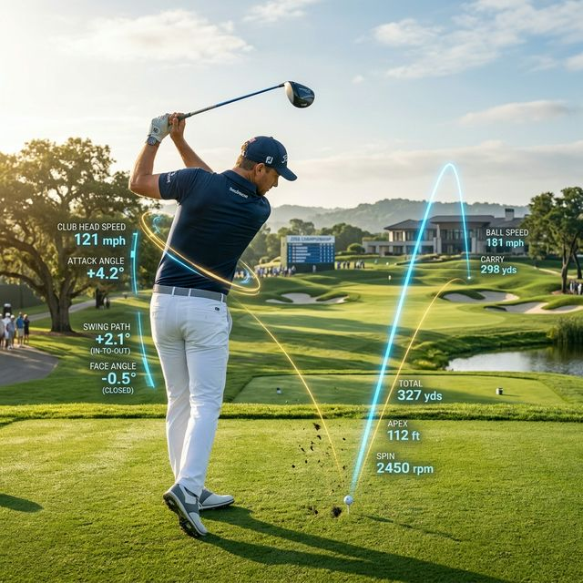
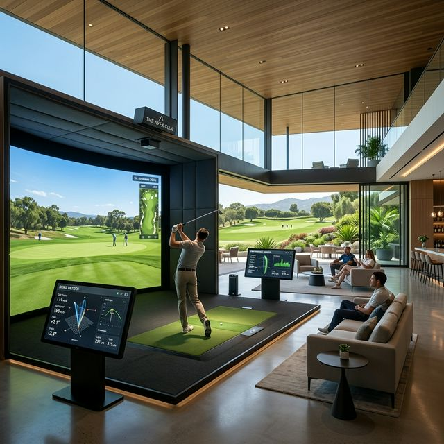

프로 골퍼들이 말하는 '손맛'이나 '리듬'이라는 단어는 아마추어에게 가장 독이 되는 표현입니다. 2026년 현재, 골프는 더 이상 감각의 영역이 아닌 정밀 물리학의 영역으로 완전히 넘어왔습니다. 90대 타수를 뜻하는 '백돌이'에서 벗어나지 못하는 결정점은 당신의 유연성 부족이 아니라, 자신의 스윙을 데이터로 객관화하지 못한 '무지'에 있습니다.

1. 아마추어의 치명적 결핍: '임팩트 효율(Smash Factor)'
드라이버 거리가 줄었다면 가장 먼저 휘두르는 속도를 높이려고 합니다. 하지만 2026년의 데이터 분석 툴은 다른 말을 합니다. 비거리의 핵심은 헤드 스피드가 아니라 스매시 팩터(Smash Factor), 즉 정타율입니다. 90대 골퍼들의 평균 스매시 팩터는 1.38 내외인 반면, 싱글 골퍼들은 1.48 이상을 유지합니다.
이 0.1의 수치 차이는 단순히 공이 멀리 가는 것 이상의 의미를 갖습니다. 임팩트 순간 클럽 페이스가 단 1도만 열리거나 닫혀도 200미터 지점에서는 15미터 이상의 좌우 편차가 발생합니다. 닭장에서 땀 흘리며 공만 때리는 것은 이 오차 범위를 우연에 맡기는 비효율적인 노동에 불과합니다.
2. 2026년 하이테크 기어: 샤프트의 '토크(Torque)'를 설계하라
대부분의 골퍼는 클럽을 살 때 브랜드와 헤드 모양만 봅니다. 하지만 진짜 실력자들은 샤프트의 토크치와 킥 포인트(Kick Point)를 자신의 스윙 템포에 맞춰 설계합니다. 2026년에 유행하는 AI 맞춤형 샤프트는 당신의 스윙 템포가 가속 구간에서 얼마나 비틀리는지를 계산하여, 임팩트 순간 자동으로 클럽 페이스를 스퀘어로 돌려주는 복원력을 가집니다.

분석이 실전으로 이어지는 3단계 루틴
- 데이터 로깅(Data Logging): 라운딩 전후로 자신의 클럽 전달 속도와 어택 앵글을 반드시 기록하십시오.
- 장비 매칭(Gear Matching): 자신의 스윙 스피드(mph)가 아닌 '스피드 가속 구간'에 맞는 샤프트 강도를 선택하십시오.
- 멘탈 리허설(Mental Rehearsal): 수치로 확인된 안착 구역(Safe Zone)을 뇌에 프로그래밍하고 샷에 임하십시오.
3. 결론: 무지성 연습은 당신의 골프 수명을 갉아먹습니다
연습장에서 수백 개의 공을 치고 난 뒤 느껴지는 근육통을 '열심'의 증거로 삼지 마십시오. 그것은 비효율의 증거일 뿐입니다. 성공한 투자자가 시장의 지표를 분석하듯, 현명한 골퍼는 자신의 스윙 데이터를 분석합니다. 삶의 질을 높이는 개선은 스포츠에서도 마찬가지입니다. 영리하게 설계하고 정교하게 휘두르십시오.
2026년의 필드는 기술을 소유한 자들에게만 관대합니다. 당신이 여전히 '눈대중'에 머물러 있다면, 골프백을 들고 필드에 나가는 행위 자체가 기회비용의 낭비일 수 있습니다. 지금 당장 당신의 스코어 카드를 데이터 시트로 바꾸십시오.
당신의 드라이버 비거리가 정체된 이유는 무엇인가요?
현재 사용 중인 클럽 사양과 평균 비거리를 댓글로 남겨주세요.
2026년식 최신 데이터 분석법을 통해 당신의 구질을 싱글로 바꿀 개선안을 무료로 진단해 드립니다.